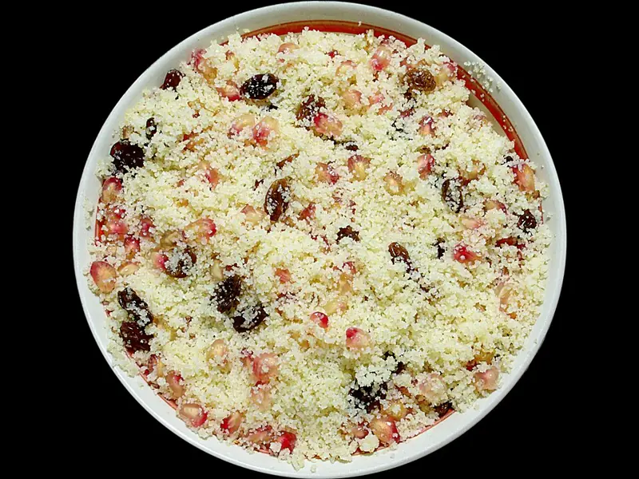

Фото: Habib M'henni, CC BY-SA 4.0

Кускус
Самый быстрый гарнир - кускус на кипятке с оливковым маслом
10 мин4 порц.233 ккал на порциюБ 6 · Ж 5 · У 39Средиземноморская кухня
Продукты на 4 порц.
- Кускус1 стак.
- Вода1,25 стак.
- Оливковое масло1 ст. л.
- Соль0,5 ч. л.
- Лимон по желаниюпо вкусу
- Зелёный лук по желаниюпо вкусу
Как готовить
- Вскипятите воду, посолите и добавьте масло.
- Всыпьте кускус в миску и залейте кипятком так, чтобы вода покрывала крупу на 1 см.
- Накройте миску крышкой или тарелкой и оставьте на 5-7 минут.
- Разрыхлите кускус вилкой, разбивая комочки.
- Добавьте лимонный сок и мелко нарезанный зелёный лук.
Совет. Не мешайте кускус ложкой сразу после заливки, иначе он слипнется. Вместо воды можно взять горячий бульон.